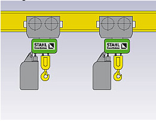
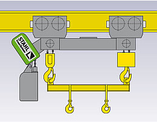

Talha de duplo gancho STAHL STD Vario: Transporte seguro de cargas de diferentes comprimentos.

Usando seus muitos anos de experiência e tecnologia inteligente, os engenheiros de R&D da STAHL trabalharam juntos próximos aos clientes para desenvolver ainda mais a talha de corrente dupla STD. O resultado: a talha de corrente dupla STD Vario com distância ajustável eletricamente entre ganchos, um maior ganho em segurança e flexibilidade no trabalho. O STD Vario é especialmente adequado para transportar cargas longas de diferentes comprimentos (ex: barras, tubos e vigas).
Talha de duplo gancho STAHL STD Vario – Os benefícios:
- • Distância entre ganchos eletricamente ajustável
- • Sem necessidade de utilização de barra de carga, aproveitando assim a total altura de elevação.
- • Operação sincronizada absoluta ao transportar cargas de diferentes comprimentos.
- • Sem operação de deslocamento acidental dos ganchos de carga ao elevar ou transladar.
Desvantagens ao usar duas talhas de correntes individuais.
- • Sincronização completa não é possível.
- • É necessário o espaçamento do Trole.
- • Suprimento de energia mais complexo.
- • O espaçamento entre os ganchos pode alterar ao transladar os troles, causando situações de cargas perigosas.
Desvantagens ao utilizar uma talha de corrente dupla com viga de elevação
- • A necessidade da utilização de barra de carga, aumenta a altura própria do equipamento, reduzindo assim o curso de elevação.
- • Os ganchos na barra de carga devem ser movidos manualmente, ou se eles forem movidos automaticamente, um fornecimento de energia adicional para a viga será necessário.
- • Pode ocorrer uma distribuição de carga com movimentação lateral.
Produtos STAHL:
- Talha elétrica de corrente
- Talhas elétricas de cabo de aço
- Ponte rolante apoiada univiga
- Ponte rolante apoiada dupla-viga
- Pontes rolantes suspensas
- Guindaste giratório
- Monovias
- Blocos de rodas
- Kit de componentes
Peças sobressalentes; manutenção preventiva e corretiva
Consultoria especializada em transporte e movimentação de carga e fornecimento de componentes para outros fabricantes.
Todos os equipamentos podem ser fornecidos na versão á prova de explosão.